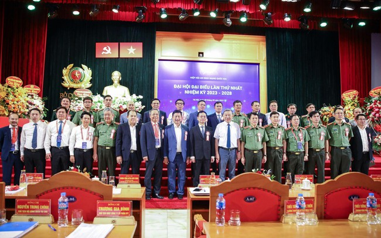
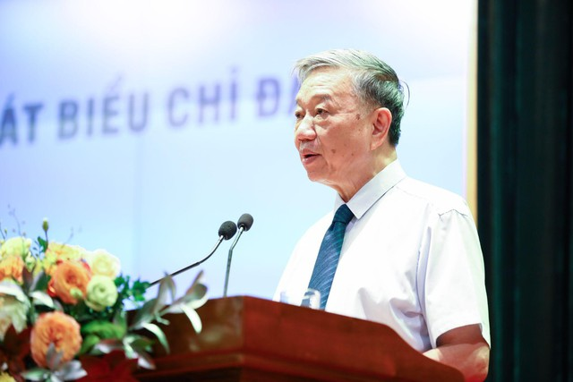
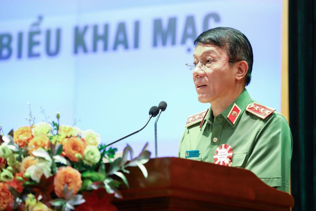
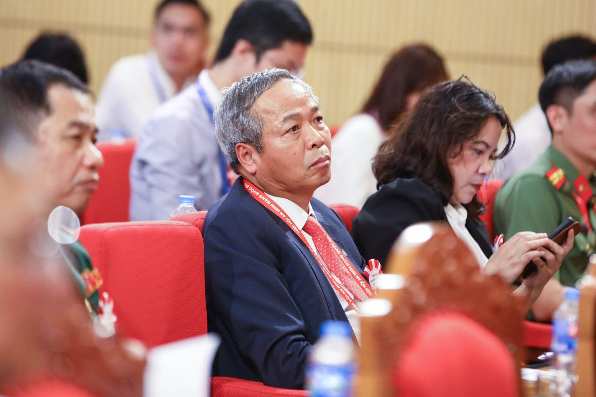
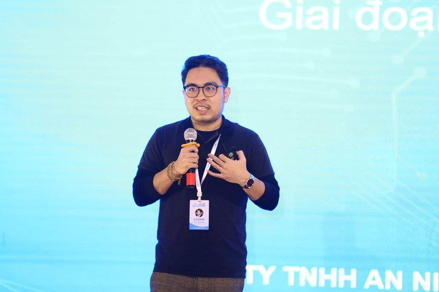

Bộ trưởng Tô Lâm cùng các đại biểu chúc mừng các đồng chí vừa được Đại hội bầu tham gia Ban Chấp hành Hiệp hội An ninh mạng quốc gia nhiệm kỳ I (2023 – 2028).
Đại hội lần thứ nhất của Hiệp hội An ninh mạng quốc gia đã thông qua chương trình, phương hướng hoạt động, điều lệ và đề án tổ chức nhân sự của hiệp hội nhiệm kỳ I (2023-2028). Đồng thời, Đại hội cũng đã bầu ra Ban Chấp hành, Ban Kiểm tra, Ban Thường vụ Hiệp hội, một số chức danh lãnh đạo và thông qua Nghị quyết Đại hội lần thứ nhất.
Theo kết quả bầu cử các chức danh lãnh đạo Hiệp hội An ninh mạng quốc gia nhiệm kỳ 2023 - 2028, Thượng tướng Lương Tam Quang, Thứ trưởng Bộ Công an được bầu là Chủ tịch Hiệp hội. Phó Chủ tịch thường trực Hiệp hội là Trung tướng Nguyễn Minh Chính, Cục trưởng Cục An ninh mạng và Phòng, chống tội phạm sử dụng công nghệ cao (Bộ Công an). Chủ tịch Tập đoàn Công nghệ CMC Nguyễn Trung Chính trúng cử là một trong 5 Phó chủ tịch Hiệp hội cùng các đồng chí: Đặng Hoàng An - Chủ tịch Hội đồng thành viên Tập đoàn Điện lực Việt Nam (EVN); Tào Đức Thắng - Chủ tịch kiêm Tổng Giám đốc Tập đoàn Công nghiệp - Viễn thông Quân đội (Viettel); Tô Dũng Thái - Chủ tịch Hội đồng thành viên Tập đoàn Bưu chính Viễn thông Việt Nam (VNPT) và Trương Gia Bình - Chủ tịch Hội đồng quản trị Công ty Cổ phần FPT.
Tổng thư ký Hiệp hội là Thượng tá Nguyễn Bá Sơn - Trưởng phòng Cục An ninh mạng và Phòng, chống tội phạm sử dụng công nghệ cao (Bộ Công an); Phó Tổng thư ký, Chánh Văn phòng bao gồm: ông Vũ Duy Hiền - Tổng Giám đốc Công ty Cổ phần Công nghệ An ninh mạng quốc gia Việt Nam (NCS) kiêm Chánh Văn phòng và Thiếu tá Đào Đức Triệu - Cán bộ Cục An ninh mạng và Phòng, chống tội phạm sử dụng công nghệ cao (Bộ Công an).
Phát biểu tại lễ khai mạc Đại hội, Đại tướng Tô Lâm - Ủy viên Bộ Chính trị, Bí thư Đảng ủy Công an Trung ương, Bộ trưởng Bộ Công an đặc biệt nhấn mạnh: "An toàn không gian mạng không chỉ là vấn đề bảo vệ môi trường mà còn là bảo vệ lãnh thổ quốc gia. Do đó, các dịch vụ công nghệ an ninh mạng chính là lá gươm, là lá chắn đắc lực trong việc gìn giữ bảo vệ chủ quyền Tổ quốc. Hiệp hội An ninh mạng quốc gia phải nhận lấy sứ mệnh quốc gia, một sứ mệnh lớn hơn, từ đó tìm thấy nhiều cơ hội hơn, quy tụ nhiều hội viên hơn, đoàn kết, dẫn dắt các doanh nghiệp đi xa hơn. Chúng ta có thể trường tồn khi gắn mình với quốc gia, giúp quốc gia hùng cường, thịnh vượng."

Đại tướng Tô Lâm - Ủy viên Bộ Chính trị, Bí thư Đảng ủy Công an Trung ương, Bộ trưởng Bộ Công an phát biểu tại lễ khai mạc
Hiệp hội An ninh mạng quốc gia là tổ chức xã hội - nghề nghiệp của công dân và tổ chức Việt Nam hoạt động trong lĩnh vực an ninh mạng. Sứ mệnh và tầm nhìn của Hiệp hội không chỉ tạo ra lợi nhuận kinh tế mà phải hướng tới mục tiêu trở thành động lực cho sự nghiệp xây dựng và bảo vệ Tổ quốc.
Theo đó, nhân sự được đề cử vào Ban thường vụ của Hiệp hội An ninh mạng quốc gia cần đáp ứng nhiều tiêu chí. Cụ thể, đầu tiên cần có năng lực và uy tín trong ngành; tiếp theo là cần có sức khỏe tốt và nguồn lực để điều hành hoạt động; đặc biệt, phải luôn nhiệt tình, tâm huyết đối với hoạt động của Hiệp hội nói riêng và ngành An ninh công nghệ thông tin nói chung.
Phát biểu tại lễ bế mạc, Thượng tướng Lương Tam Quang, Thứ trưởng Bộ Công an nhận định: Với mục tiêu hình thành hệ sinh thái an ninh mạng vận hành linh hoạt, liên kết chặt chẽ, kết nối công – tư hữu hiệu, huy động sự tham gia tự nguyện, đoàn kết của các tổ chức doanh nghiệp, cá nhân hỗ trợ nhau cùng phát triển... Thông qua đó các giải pháp an ninh mạng và Hiệp hội An ninh mạng quốc gia thực sự trở thành động lực chính cho sự nghiệp xây dựng, bảo vệ Tổ quốc…

Thứ trưởng Lương Tam Quang, Chủ tịch Hiệp hội An ninh mạng quốc gia phát biểu tại Đại hội.
Chủ tịch Tập đoàn CMC Nguyễn Trung Chính bày tỏ niềm vui mừng và tự hào trước sự tín nhiệm của Đại hội, đồng thời thể hiện tình cảm trân trọng về tinh thần trách nhiệm của các đại biểu đã lựa chọn, gửi gắm niềm tin vào từng đồng chí trong Ban Chấp hành Hiệp hội An ninh mạng quốc gia.
"Tôi vô cùng trân trọng và ý thức được vai trò trách nhiệm của mình trong cương vị mới. Trong bất kỳ hoàn cảnh nào, dù khó khăn hay thuận lợi, tôi sẽ luôn nỗ lực đóng góp để xây dựng hệ sinh thái an ninh mạng, qua đó góp phần nâng cao tiềm lực an ninh mạng quốc gia và sự phát triển bền vững của đất nước", Chủ tịch Nguyễn Trung Chính khẳng định.

Ông Nguyễn Trung Chính - Chủ tịch Hội đồng quản trị/Chủ tịch điều hành Tập đoàn Công nghệ CMC tham dự đại hội
Hiệp hội An ninh mạng quốc gia với hơn 200 thành viên vừa chính thức được thành lập sẽ hướng tới mục tiêu bảo vệ an ninh, chủ quyền quốc gia, nâng cao tiềm lực quốc gia trên không gian mạng, hình thành hệ sinh thái an ninh mạng bản sắc Việt Nam.
CMC là doanh nghiệp tiên phong trong các sản phẩm An toàn thông tin mạng tại Việt Nam
Đến dự sự kiện, đại diện Tập đoàn Công nghệ CMC cũng cho biết Tập đoàn sẵn sàng đồng hành cùng các hoạt động phát triển An toàn thông tin mạng của Hiệp hội trong thời gian tới. CMC Cyber Security là công ty thành viên thuộc Tập đoàn CMC – Tập đoàn công nghệ Top 2 Việt Nam. CMC Cyber Security tự hào được xây dựng từ một đội ngũ chuyên gia có trình độ và đạt nhiều bằng cấp quốc tế với mục tiêu trở thành đơn vị chiến lược của Tập đoàn trong lĩnh vực nghiên cứu, phát triển các phần mềm và dịch vụ an toàn thông tin.
CMC Cyber Security cung cấp các sản phẩm diệt virus cho cá nhân, các dịch vụ tư vấn và giải pháp về an ninh an toàn thông tin cho hệ thống của tổ chức, doanh nghiệp. CMC Cyber Security mang đến cho khách hàng là cá nhân, doanh nghiệp và các tổ chức trong mọi lĩnh vực những giải pháp bảo mật thực sự hiệu quả với giá cả hợp lý, chất lượng phục vụ chuyên nghiệp nhất.
"Hiện nay, doanh nghiệp đang cung cấp một dải hợp đồng dịch vụ rộng, từ làm phần mềm, cung cấp dịch vụ chuyên nghiệp đến dịch vụ tư vấn tiêu chuẩn bảo mật quốc tế. Công ty cũng sẵn sàng cung cấp nhân sự để vận hành giải pháp bảo mật cho khách hàng ở các quy mô khác nhau.", ông Hà Thế Phương - Tổng Giám đốc CMC Cyber Security chia sẻ.

Ông Hà Thế Phương - Tổng Giám đốc CMC Cyber Security cho biết doanh nghiệp ghi dấu ấn trên thị trường với nhiều sản phẩm An toàn thông tin mạng
Xét về quy mô doanh thu, khách hàng, thị trường, hiện nay CMC Cyber Security đứng đầu trong các công ty tư nhân và đứng thứ 2 trong nhóm các doanh nghiệp Việt Nam thuộc lĩnh vực an ninh bảo mật.
Cụ thể, dịch vụ chủ lực của CMC Cyber Security, hệ thống công nghệ CMC SOC ứng dụng công nghệ trí tuệ nhân tạo (AI), tự động hóa (Automation) có khả năng giám sát 24/7, phân tích, cảnh báo và xử lý thời gian thực các sự cố an ninh an toàn thông tin tại hệ thống khách hàng.
Mảng kiểm thử bảo mật và mảng cung cấp tiêu chuẩn bảo mật (PCI – DSS, SWIFT, ISO, …) đang phục vụ hàng trăm doanh nghiệp, chủ yếu là khách hàng khối ngân hàng, tài chính, chứng khoán, khối thương mại điện tử…
Ông Hồ Thanh Tùng - Tổng Giám đốc Tập đoàn cho biết thêm: "CMC Cyber Security cũng là thành viên đầu tiên gia nhập Hiệp hội các Nhà nghiên cứu mã độc châu Á và là 1 trong các đơn vị ở Việt Nam nằm trong nhóm các nhà sản xuất phần mềm diệt virus của Microsoft trên thế giới".
Nguồn: VTV.vn